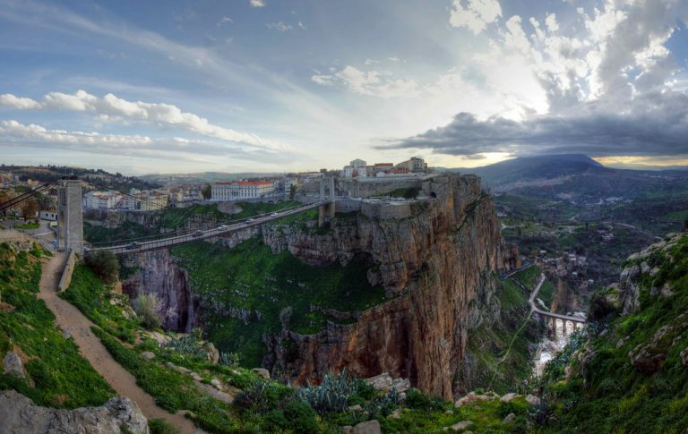
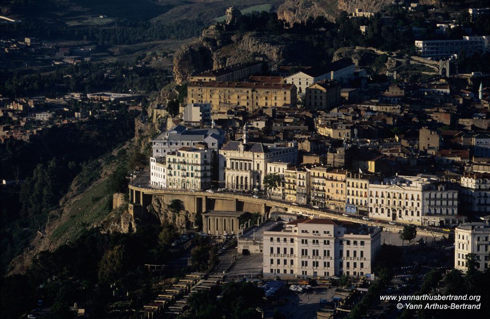
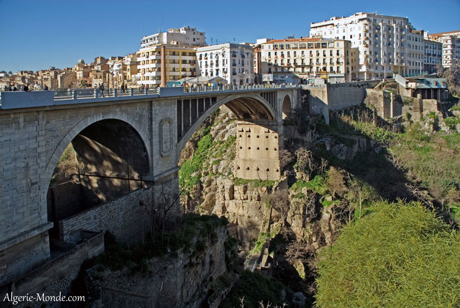

Constantine is a natural marvel that has transformed over the years into a stunning spot for tourists. The city was the Capital of Numidia and after that Roman Numidia and it goes without saying that politics and power have always played a part here

The majority of buildings in the city can only be reached by crossing the bridge across a large canyon. This gives the city a feeling of fantasy that has been retained since the time of the Romans. Despite the unique way the city looks, and its astonishing history, there is not much to see here in terms of attraction and tourists may find that a couple of days here is enough.
